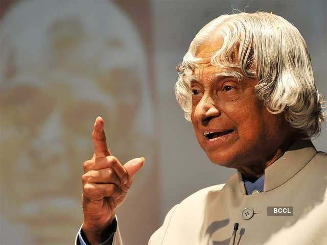

A.P.J. Abdul Kalam, in full Avul Pakir Jainulabdeen Abdul Kalam, (born October 15, 1931, Rameswaram, India—died July 27, 2015, Shillong), Indian scientist and politician who played a leading role in the development of India’s missile and nuclear weapons programs. He was president of India from 2002 to 2007.
A. P. J. Abdul Kalam
Avul Pakir Jainulabdeen Abdul Kalam

Biography
A.P.J. Abdul Kalam served as president of the Republic of India from 2002 to 2007. As president, Kalam promoted the advancement of the national nuclear weapons program. Kalam also devised a 20-year action plan to achieve economic growth through technological development in India.
From 1992 to 1997 Kalam was scientific adviser to the defense minister, and he later served as principal scientific adviser (1999–2001) to the government with the rank of cabinet minister
His prominent role in the country’s 1998 nuclear weapons tests solidified India as a nuclear power and established Kalam as a national hero, although the tests caused great concern in the international community.
In 1998 Kalam put forward a countrywide plan called Technology Vision 2020, which he described as a road map for transforming India from a less-developed to a developed society in 20 years.
The plan called for, among other measures, increasing agricultural productivity, emphasizing technology as a vehicle for economic growth, and widening access to health care and education.
On July 27, 2015, he collapsed while delivering a lecture at the Indian Institute of Management Shillong and was pronounced dead from cardiac arrest soon afterward.
Timeline
1931-Born to a Tamil Muslim family in the pilgrimage centre of Rameswaram on Pamban Island, then in the Madras Presidency and now in the State of Tamil Nadu.
1954-After completing his education at the Schwartz Higher Secondary School, Ramanathapuram, Kalam went on to attend Saint Joseph's College, Tiruchirappalli, then affiliated with the University of Madras, from where he graduated in physics
1955-He moved to Madras to study aerospace engineering in Madras Institute of Technology.
1960-After graduating from the Madras Institute of Technology, Kalam joined the Aeronautical Development Establishment of the Defence Research and Development Organisation (DRDO) as a scientist where he started his career by designing a small hovercraft, but remained unconvinced by his choice of a job at DRDO.
1961-Joined DRDO as a scientist.
1969-Kalam was transferred to the Indian Space Research Organisation (ISRO) where he was the project director of India's first Satellite Launch Vehicle (SLV-III) which successfully deployed the Rohini satellite in near-earth orbit in July 1980.
1980-Became the project Director for India's First Indegenous Satellite Program.
1980-Was involved in the development of several Indegenous Missiles for India like Agni, Prithvi.
1981-Awarded Padma Bhushan.
1990-Awarded Padma Vibhushan.
1992-Kalam started to serve as the Chief Scientific Adviser to the Prime Minister and the Secretary of the Defence Research and Development Organisation. It was this time when the the Pokhran-II nuclear tests were conducted which he played an intensive political and technological role.
1997-Awarded Bharat Ratna.
2002-Kalam served as the 11th President of India, succeeding K. R. Narayanan. He won the 2002 presidential election with an electoral vote of 922,884, surpassing the 107,366 votes won by Lakshmi Sahgal. His term lasted from 25 July 2002 to 25 July 2007.
2012-Kalam launched a programme for the youth of India called the What Can I Give Movement, with a central theme of defeating corruption.
2015- Kalam travelled to Shillong to deliver a lecture on "Creating a Livable Planet Earth" at the Indian Institute of Management Shillong. While climbing a flight of stairs, he experienced some discomfort, but was able to enter the auditorium after a brief rest.At around 6:35 p.m. IST, only five minutes into his lecture, he collapsed.He was rushed to the nearby Bethany Hospital in a critical condition; upon arrival, he lacked a pulse or any other signs of life.Despite being placed in the intensive care unit, Kalam was confirmed dead of a sudden cardiac arrest at 7:45 p.m IST.His last words, to his aide Srijan Pal Singh, were reportedly: "Funny guy! Are you doing well?"
His Famous Books
- India 2020: A Vision for the New Millennium.
- Wings of Fire: An Autobiography
- Ignited Minds: Unleashing the Power within India.
- The Luminous Sparks: A Biography in Verse and Colours.
- Guiding Souls: Dialogues on the Purpose of Life.
- Mission of India: A Vision of Indian Youth.
Honors of Kalam
- 1997- Bharat Ratna, Indira Gandhi Award for national integration
- 1981- Padma Bhushan
- 1990- Padam Vibushan
- 1998- Veer Savarkar Award
- 2011- IEEE Honorary Award
- 2000- Ramanujan Award
"Dream is not that you see in sleep, dream is something that does not let you sleep."
Learn more about A. P. J. Abdul KalamGallery
Dr APJ Abdul Kalam's House
APJ Abdul Kalam laid to rest in Tamil Nadu hometown, India
Success Story of India's greatest scientist-Dr APJ Abdul Kalam